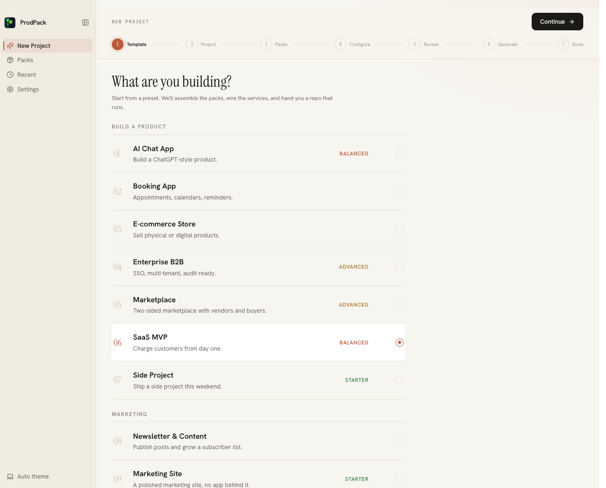

1
Pick a template
Tell ProdPack what you are building. It starts you from a preset and assembles a sensible starting set of modules that you tune from there, so you are never staring at a blank configuration.
Preset, not a blank slate
